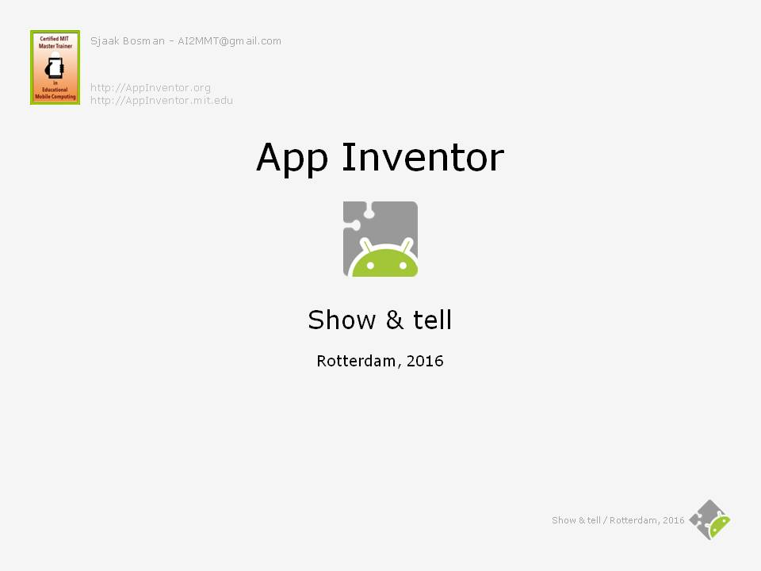
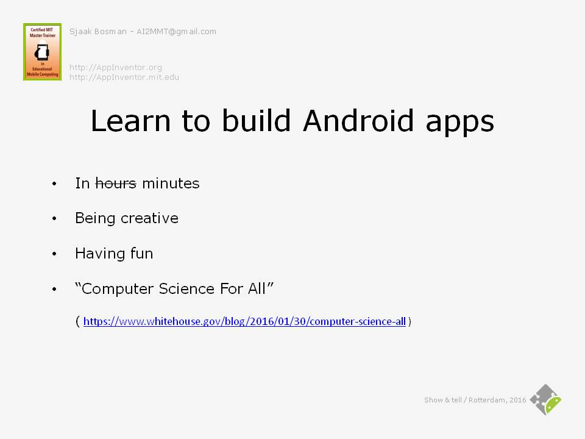
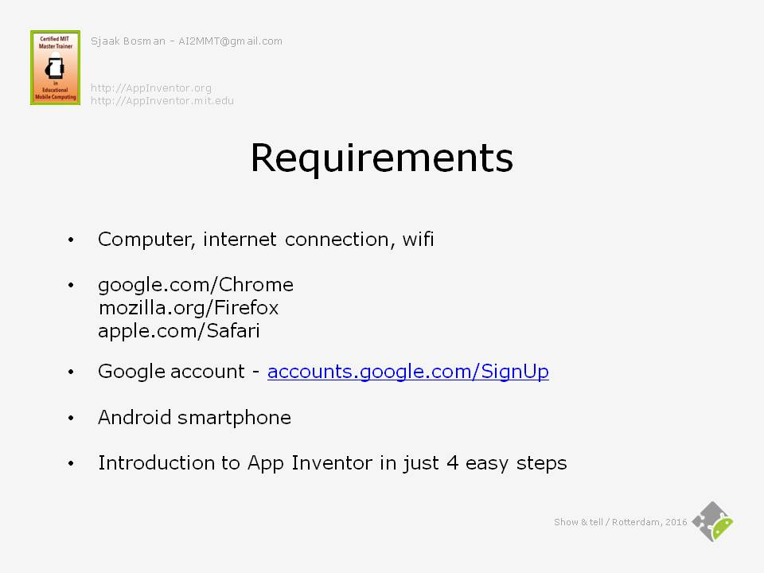
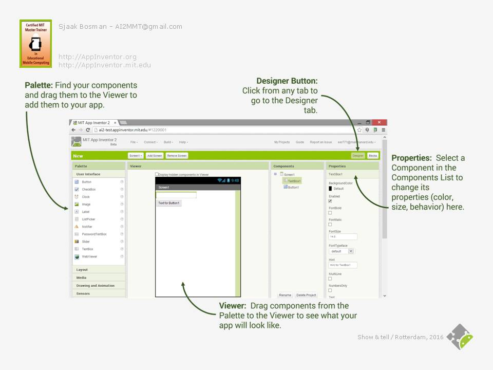
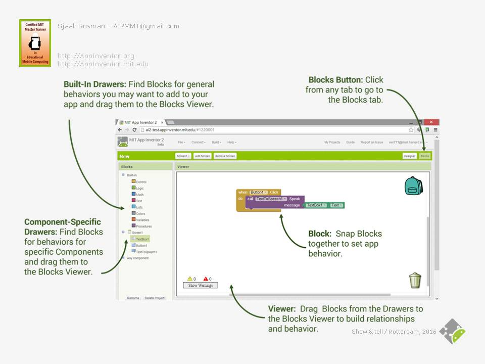
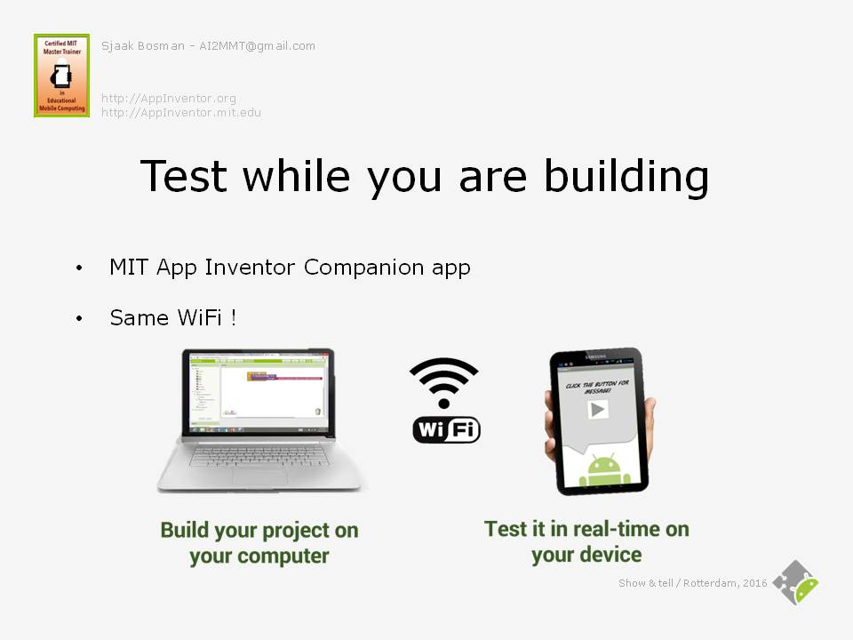
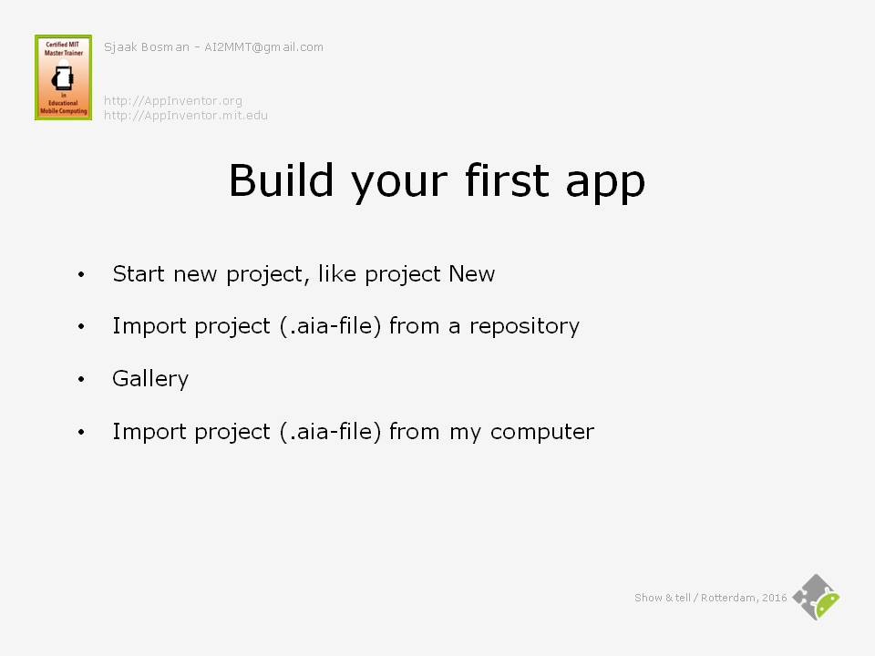
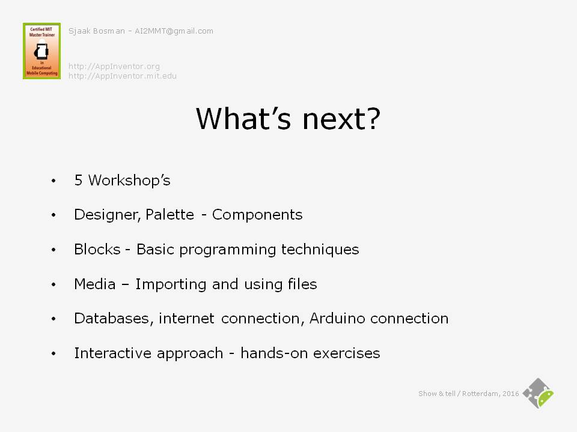
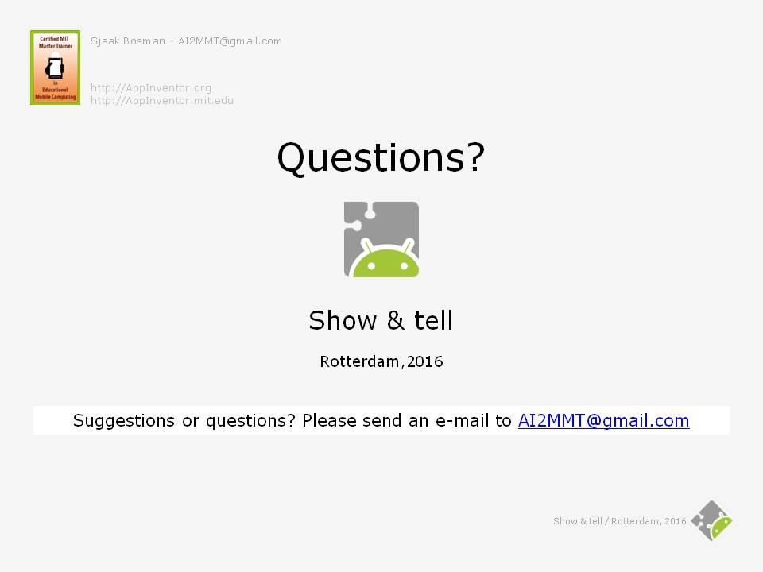

Show & Tell: Introducing App Inventor
 This is a guest blog by MIT Master Trainer Sjaak Bosman
This is a guest blog by MIT Master Trainer Sjaak Bosman
When you use App Inventor for a while and become familiar with all its possibilities, you might want to spread the word. Of course, you can give people a demo or the link to AppInventor.mit.edu, but that might not be enough to get them really going even though they are interested. At least, that is my experience.
Because I was asked a few times to come and tell about App Inventor, I developed this practical presentation for adults. Not to teach strictly about Computer Science but to get people as enthusiastic as I became about App Inventor. The presentation is a Show & tell kind of way, with which you can introduce App Inventor and demonstrate some examples. Therefore, besides this presentation, activate App Inventor in another window to switch back and forth quickly.
Slide 1: Introduction

| Show | Tell |
|---|---|
| Slide 1. | |
| After a short introduction of yourself, and maybe a little chat about people’s experience, you can begin the presentation. |
Slide 2: Learn to build Android apps

| Show | Tell |
|---|---|
| Slide 2. | |
| The goal of this presentation is to learn to build Android apps, while being creative and having fun in controlling your smartphone. But there is a big idea behind this goal: “Computer Science For All” is an initiative of President Obama to motivate children to become equipped with computational thinking skills and familiar with computer science. The idea is that they will become active citizens in a technology-driven world, instead of being just consumers. | |
| (Source: https://www.whitehouse.gov/blog/2016/01/30/computer-science-all) | |
| But even though we are not children anymore, we still can participate and become more active in computer science. This presentation shows how accessible App Inventor is, and how you can make apps for your Android Smartphone in hours. Replacing ‘hours’ by ‘minutes’ is just a practical joke, because the time spent to create apps with App Inventor feels like minutes compared to using traditional programming languages. |
Slide 3: Requirements

| Show | Tell |
|---|---|
| Slide 3. | |
| Actually the first four conditions are probably already met. If not, install the Chrome, Firefox or Safari browser and create a Google account. It costs you only a few minutes to do so. Internet Explorer and Edge are not supported. |
Slide 4: Introduction to App Inventor in just 4 easy steps

| Show | Tell |
|---|---|
| Slide 4. | |
| The environment in which you develop your App Inventor Android apps is 100% web-based. You don’t need to install anything on your computer, just go to http://ai2.appinventor.mit.edu and log in with your Google account. If this is your first time, you are being asked to accept the Terms of Service and take a short voluntary survey. | |
| The introduction to App Inventor consists of 4 easy steps, each treated separately. |
Slide 5: Step 1, Designer: How your app looks

| Show | Tell |
|---|---|
| Slide 5. | |
| Step 1. | |
| In the Designer window you design the User Interface of your app: | |
| Explain the 5 different panes briefly. | |
| 1. Palette: Containing all the components that can be included in the app. The components are arranged in several categories, such as User Interface and Layout. |
|
| 2. Viewer: The appearance or User Interface of the app. | |
| Switch to the App Inventor window. | |
| Click ‘Start new project’. Name it ‘New’. Wait until the Designer window shows up and demonstrate how to put the textbox and button in the viewer. | |
| Switch back to the presentation. | |
| 3. Components: A list of components that are included in the app. | |
| 4. Properties: A list of properties of the component that is selected in the Components pane. | |
| Switch to the App Inventor window. | |
| Demonstrate how to change properties, for example enable FontBold of Button1 and change the text to ‘Speak!’. Also explain de Designer and Blocks Button (as preparation for the next slide). | |
| Switch back to the presentation. | |
| 5. Media (not on the screenshot): A list of all media files, such as images and sounds, that have been uploaded into the app. This will be addressed during an optional workshop. |
Slide 6: Step 2, Blocks: How your app behaves

| Show | Tell |
|---|---|
| Slide 6. | |
| Step 2. | |
| In the Blocks window you design the behavior of your app: | |
| Explain the 2 different panes briefly. | . |
| Step 2. | |
| 1. Blocks: Containing all the code blocks that can be included in the app. The blocks are arranged in 3 categories, Built-in, Component Specific and Any component. |
|
| 2. The code blocks or source code of the app. With the blocks you program the behavior of your app. |
|
| Switch to the App Inventor window. | |
| Click the Blocks Button and demonstrate how to put the Button1.Click event handler, TextToSpeech procedure call (Because the TextToSpeech component is not available at first, use the Designer mode to include this non-visible Media component.) and Textbox.Text property in the viewer. | |
| Switch back to the presentation. | |
| If the situation allows, you could talk a little more about event handlers and procedure calls and their purposes and behaviors. But be careful, it can become too difficult quickly. Slide 8, section ‘import a project from the gallery’, gives you the opportunity to demonstrate procedures. |
Slide 7: Step 3, Test while you are building

| Show | Tell |
|---|---|
| Slide 7. | |
| Step 3. | |
| Let’s test the app we just built. Therefore find the app ‘MIT App Inventor Companion’ in Google play and install it on your smartphone. | |
| If on the same WiFi, the Companion app lets you test your app in real-time while you are building it. | |
| Switch to the App Inventor window. | |
| In the Connect menu click AI Companion. Switch to your smartphone and start the MIT AI2 Companion app and enter the connection code. Type a text and press the ‘Speak!’ button. Do not forget to enable the volume on your smartphone. | |
| Switch back to the presentation. |
Slide 8: Step 4, Build you first app

| Show | Tell |
|---|---|
| Slide 8. | |
| Step 4. | |
| Actually, we just built our first app, New, from scratch. There are three additional methods to create an app: | |
| First, one can import an app from a repository. At the moment there are only two projects in the default repository. | |
| Switch to the App Inventor window. | |
| Select ‘Import project (.aia-file) from a repository’ in the Projects-menu. Select the HelloPurr app. Name the components (Button1 and Sound1) and discuss what the app probably will do. Reset the connection and restart the MIT AI2 Companion app to demonstrate HelloPurr | |
| Wouldn't it be nice if the cat purrs when the smartphone is being shaken? App Inventor comes with lots of sensors, like the accelerometer sensor which detects movements of the smartphone. Of course the actual sensors are hardware components in the smartphone, and App Inventor provides software interfaces to them. For the sake of easiness we just call the software interfaces sensors too. | |
| Switch to the designer in the App Inventor window. | |
| Add the AccelerometerSensor1 sensor. Switch to the blocks and add the AccelerometerSensor1.Shaking event handler. Copy both blocks in the Button1.Click event handler to the AccelerometerSensor1.Shaking event handler. Demonstrate HelloPurr again to reflect the changes. | |
| Switch back to the presentation. | |
| Second, one can import a project from the gallery. The gallery is a place where one can share his or hers project. You can find thousands of apps in the gallery. So why start from scratch? | |
| Switch to the App Inventor window. | |
| Select the menu option Gallery. Search for ‘Simple Hands-Free Counting App’ and click ‘OPEN THE APP’ and click ‘OK’. Demonstrate the app on your smartphone. If necessary, reset the connection and restart the MIT AI2 Companion app. Take a brief look at the User Interface and blocks structure to explain what you demonstrated. | |
| This project includes a variable, that gives you the opportunity to explain what variables are. Also, all 3 event handlers contain the same blocks, which give you the opportunity to introduce procedures. Depending on the audience, you can discuss this. | |
| Switch back to the presentation. | |
| Third, you can import a project from your computer. Likewise, you can store a project on your computer. This option will be addressed elsewhere. |
Slide 9: What’s next?

| Show | Tell |
|---|---|
| Slide 9. | |
| There is, of course, a lot more to tell, explore and invent about App Inventor. So why won’t you give yourself a flying start by attending a program of 5 additional workshops? The workshops will address a lot of aspects of App Inventor, such as: | |
|
|
|
|
|
|
|
|
|
|
| Of course you can change the workshop content as you like. |
Slide 10: More information
| Show | Tell |
|---|---|
| Slide 10. | |
| Lots of information can be found on internet. As a start you can begin at AppInventor.mit.edu, the home of App Inventor. Lots of examples can be found in the ‘App of the Month’ section. | |
| Appinventor.org is a product of the University of San Francisco's Democratize Computing Lab, and is intended to provide materials for learning and teaching App Inventor. | |
| PuraVidaApps is a site made by an App Inventor enthusiast, where you can find tons of snippets, tutorials and links. | |
| If time allows, you can visit these websites. |
Slide 11: Questions?

| Show | Tell |
|---|---|
| Slide 10. | |
| Suggestions or questions? | |
| If you have suggestions or questions afterwards, please send an e-mail to
.. |